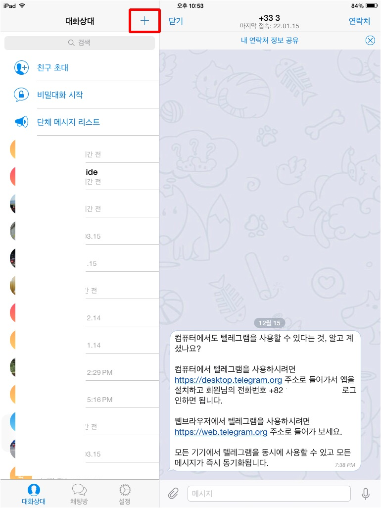
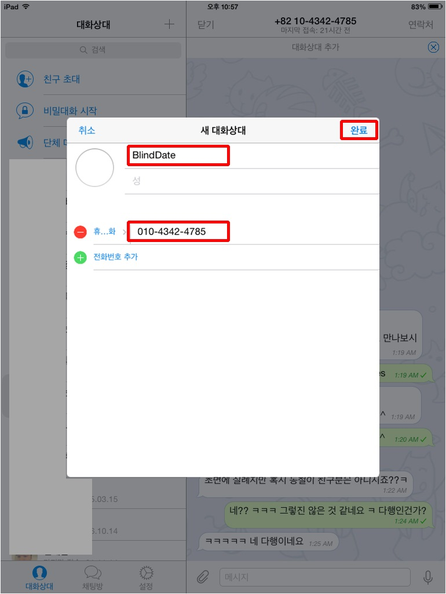
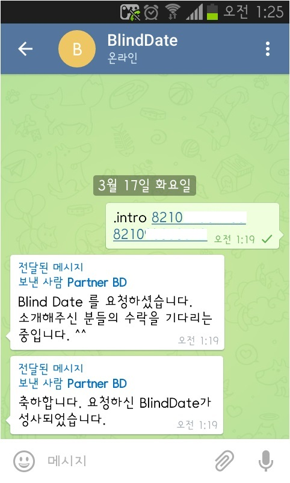
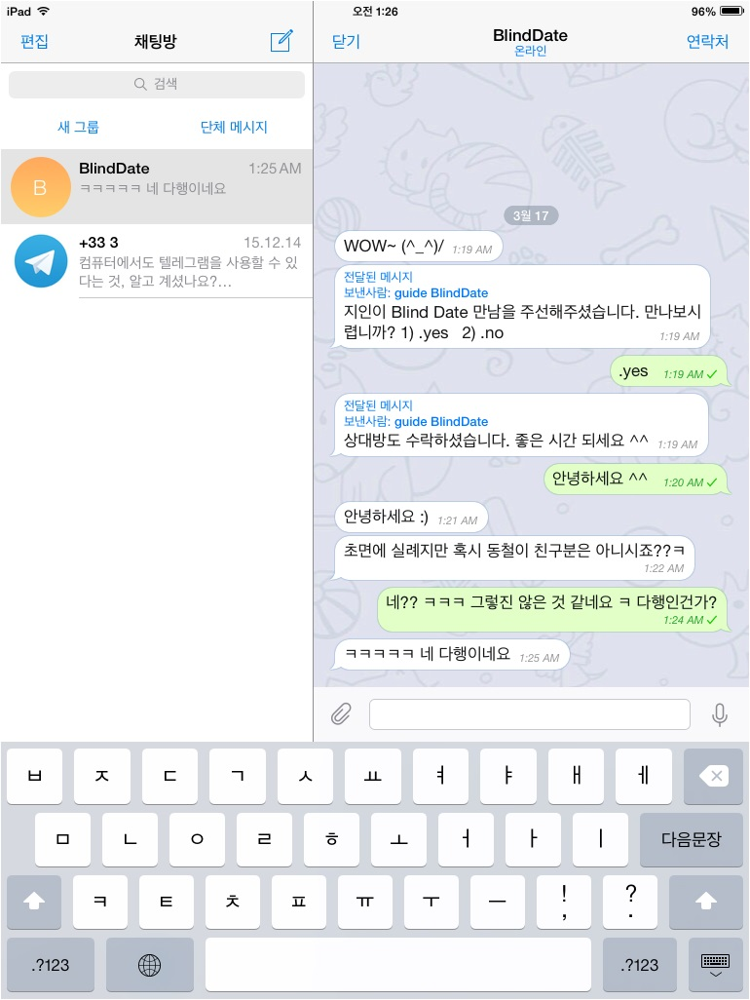

Blind Date
새로운 만남이 필요한데..
소개팅앱에는 변태만 드글거리고
친구년들은 자기일 아니라고 나몰라라하죠?
죽마고우가 괜찮은 남자 좀 소개시켜 달라고하는데
소개시켜줬다가 결과 안좋으면.. 괜히 미안하죠?
어렵게 소개 시켜줬는데 왜 내가 미안해야하느냐고오~~!!!
그래서 만들어 봄.
BlindDate 소개
- 지인에 의한 변태 필터링
- 실제 소개팅과 동일하게 지인이 서로 잘 맞을 것 같은 쌍을 추천해 줌.
- 평소 지인에게 잘하자.
- 상대방 정보 비공개
- 나이, 이름, 사진, 성별 등 상대방의 정보를 단 하나도 제공해주지 않음.
- 일단 서로의 정신세계를 파악 후 외적꼬라지를 파악하라는 의도.
- 띠동갑, 동성과의 만남은 알아서 잘(?) 하시길. (평소에 지인에게 잘하자.)
- 주선자 정보도 비공개
- 소개받은 사람들은 주선자가 누구인지 알 수 없음.
- 소개팅 결과가 나쁘면 주선자는 자신의 기억에서만 지우고 맘편하게 살면됨.
- 소개팅 결과가 좋으면 공개할지 말지는 고민중…
- 대화 100% 공개
- 아직 없는 기능.
- 서로 나눈 대화는 남들에게 공개. 그래도 익명으로 공개되니 안심하세요.
- 근데 주선자는 누군지도 다 알고 있다. 주선자에게 이정도 재미는 줘야지 않겠어?
- 주선자, 상대방, 제 3의 사람들이 평가함. 당신이 쾌놈인지 개놈인지. 뒤끝있음.
- 공짜
- 회원료, 사용료 없음.
- 대신 기능추가 요청 안받음. 돈없음. 힘듬. 스트레스 싫음.
메신저 설치, 로그인 그리고 주소록등록
Telegram 설치
Telegram 가입 혹은 로그인
- 핸드폰번호(국제번호) 입력만 하면 인증문자 옴. 인증문자 적으면 됨.
국제번호 예 : 010-1234-5678 => 821012345678 ( 82 : 대한민국 )
BlindDate ( +821043424785 ) 주소록 추가
- Android의 경우는 전화번호를 핸드폰 주소록에 저장하면 telegram 주소록에 추가된다.
- Android 외의 경우는 telegram 주소록(contacts)에서 신규주소(new contact)를 클릭해서 추가한다.
 
사용법
대화창에 명령어를 입력하세요.
쩜(.)을 앞에 붙여줘야 명령어로 인식됩니다.
- .help : 기본명령어들에 대해서 알려줍니다.
1. 소개 시켜주기 ( 주선자 )
- BlindDate(+821043424785) 에게 intro 명령어를 보낸다.
- .intro PhoneNumber1 PhoneNumber2 : 두 사람 소개시켜주기.
예 ) .intro 821012345678 821056781234

2. BlindDate 승락 후 즐기기( 소개받은 당사자들 )
- BlindDate(+821043424785)가 걸어오는 질문을 즐거운 마음으로 읽는다.
- .yes : 승락. 두 당사자가 모두 승락하는 경우 진행됨.

- .no : 거절.
- .bye : 대화종료.